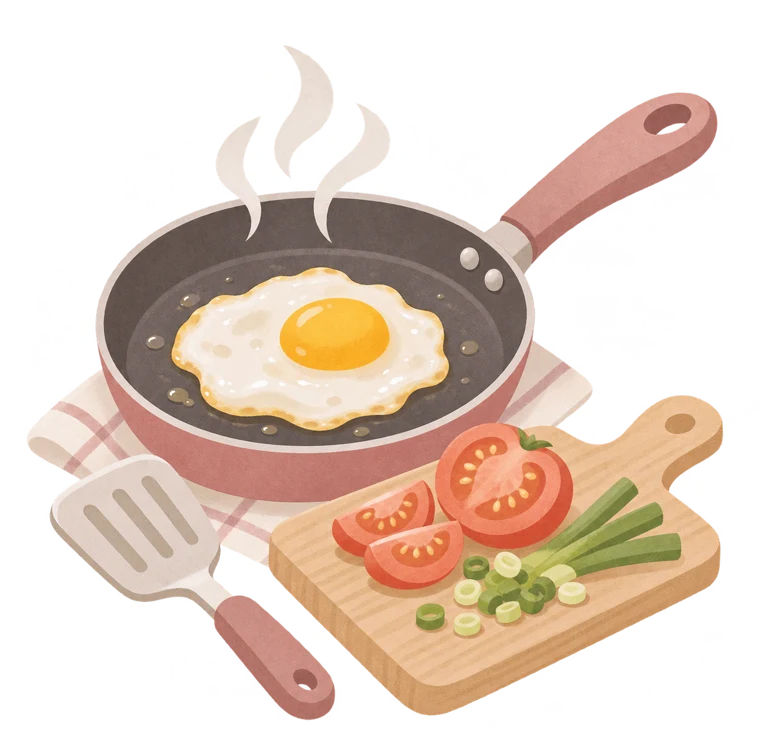
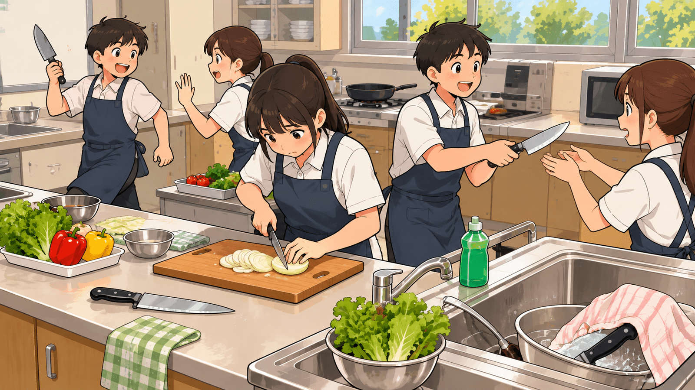

👩🍳 料理實作力｜第 5 關
自己動手，
自己動手，
做一餐！
會看食譜，不代表就會料理。
從準備、刀工、烹調、分工到清潔復原，才是一個完整的料理任務。
教師提問：「你覺得料理真正開始的第一步，是開火嗎？」

STEP 1｜開始料理前
🧼 第一件事要做什麼？
今天要做「蛋炒飯＋蔬菜蛋花湯」，老師說可以開始了。
料理前四件事：🧼 個人衛生 🧹 工作環境 🥕 食材確認 🍳 器具確認
教師提醒：這裡不是要背口訣，而是建立「料理從準備開始」的程序感。
STEP 2｜我的廚房工具箱
🔧 完成任務，要拿什麼工具？
任務 1：把紅蘿蔔切成細絲。
教師提問：「工具不是越多越好，怎麼選才有效率？」
STEP 3｜刀工安全挑戰
⚠️ 哪裡有危險？
直接點擊圖片，找出廚房裡的 5 個危險行為。

已找到 0 / 5｜找到一個危險點後，這裡會顯示原因。
🔪 安全用刀三招
🐾 貓爪手
扶食材的手指彎曲、指尖往內縮，用指關節靠著刀面，刀子就切不到指尖。
扶食材的手指彎曲、指尖往內縮，用指關節靠著刀面，刀子就切不到指尖。
🧻 砧板不滑動
砧板下墊濕抹布或止滑墊。圓的食材（番茄、紅蘿蔔）先切一刀做出平面，讓它站穩再切。
砧板下墊濕抹布或止滑墊。圓的食材（番茄、紅蘿蔔）先切一刀做出平面，讓它站穩再切。
↕️ 放刀與傳刀
刀子用完放在砧板上方、刀刃朝內。傳刀時刀柄朝向對方，或先放在桌上讓對方自己拿。
刀子用完放在砧板上方、刀刃朝內。傳刀時刀柄朝向對方，或先放在桌上讓對方自己拿。
教師提醒：安全規則要配合實際操作示範，不建議只靠網頁完成。
STEP 4｜烹調方式實驗室
🔥 同一種食材，不只一種做法
點一種烹調方式看看。
🔥 火候也是技巧
大火 快速加熱、縮短時間
例：快炒青菜、煮滾一鍋水
例：快炒青菜、煮滾一鍋水
中火 最常用，好控制
例：煎蛋、炒蛋、炒飯
例：煎蛋、炒蛋、炒飯
小火 慢慢加熱、不易燒焦
例：燉煮、煮好後保溫
例：燉煮、煮好後保溫
🥚 同一顆蛋，配對看看是哪一種做法？
每一道蛋料理，選出它主要的烹調方式。
教師提問：「如果今天食材是雞蛋，你想到幾種做法？」
STEP 5｜料理順序與分工
⏱️ 不是所有人都站著等
今天要完成：炒飯＋炒青菜＋蛋花湯。請依序點出合理流程。
🧩 料理順序
先把「備料」做好，再進入開火與烹調。
👥 四人分工示例
A｜備料
洗菜、切菜、準備配料
洗菜、切菜、準備配料
B｜蛋與調味
打蛋、量調味料
打蛋、量調味料
C｜爐台料理
依流程操作爐台
依流程操作爐台
D｜清潔支援
器具歸位、邊做邊整理
器具歸位、邊做邊整理
教師重點：分工不是固定職位，重點是工作量合理、彼此知道下一步。
STEP 6｜開火前先模擬一次
🎮 選一道料理，先在腦中做一次
選一道你想做、也吃得下的料理。不喜歡番茄？沒關係，換一道！
請依序完成
先想清楚順序，再真的進廚房。
今日料理任務
教師提醒：正式實作時可讓各組依口味或飲食限制選不同料理；這一頁當作課前檢核，不取代現場示範。若有學生對蛋過敏，可引導選「蒜炒高麗菜」。
🏅
完成｜料理實作力已探索
料理完成，不代表任務結束
還要品評、反思、清潔與復原，才是一個完整的家政實作。
📸 我的料理自評
🧹 廚房復原挑戰
🍳
🔪
🥣
🗑️
🧽
已完成清潔：0 / 5｜點每一樣東西，看看怎麼清潔復原。
🧼
衛生管理
衛生管理
🔪
安全操作
安全操作
🥕
食材處理
食材處理
🔥
烹調技巧
烹調技巧
⏱️
時間管理
時間管理
🤝
團隊合作
團隊合作
收尾提問：「如果下次再做一次，你最想改善哪一個地方？」